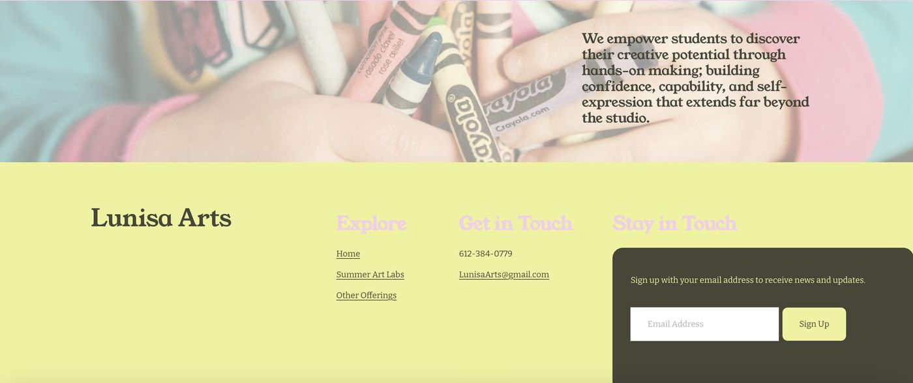

Lunisa Arts Summer Art Camp
A founder-led summer art camp in Minneapolis, given its operating structure and digital home from the ground up.
The challenge
A new camp with a clear creative vision needed the business underneath it: defined offerings and prices, a rhythm of events beyond summer, and one place for families to learn and register.
What we built
- Offering structure and pricing for small-group lessons, birthday parties, and private parties
- A recurring events framework, from First Friday Date Night to seasonal holiday workshops (designed; rollout planned)
- Website structure, content, and registration flow on Squarespace
- A shareable digital flyer page that replaced printed postcards
How it works
Families find the weekly Summer Art Labs sessions and other offerings in one place and register online. The flyer page travels by link, so outreach no longer depends on a print run.
Operations designPricingSquarespaceContent
Visit lunisaarts.com (opens in a new tab)